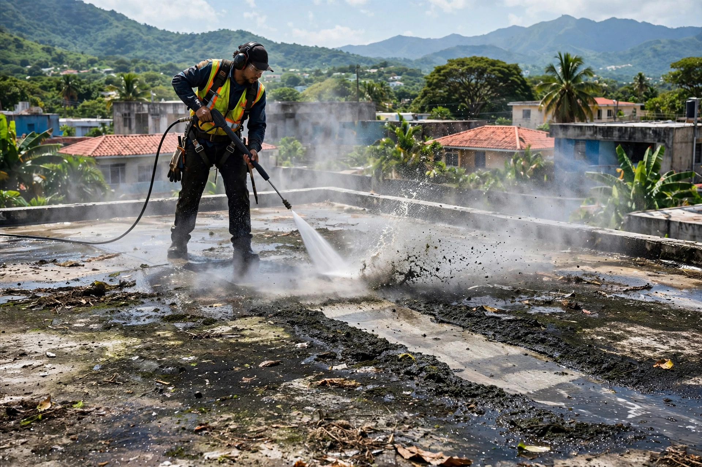
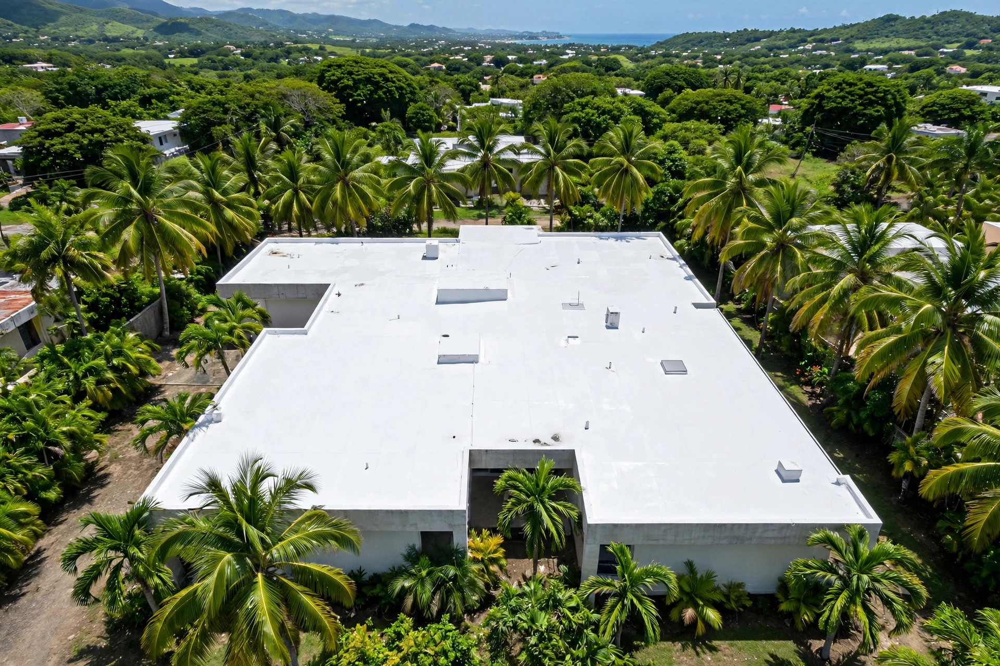
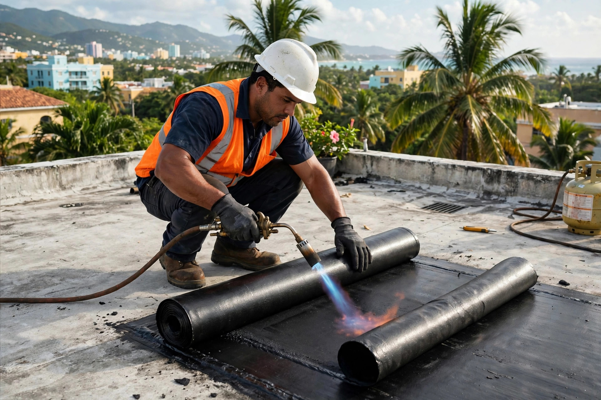
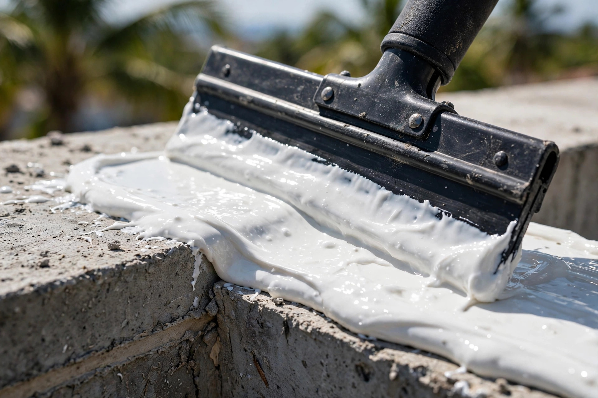

Sellado profesional con preparación de verdad: lavado a presión, corrección de grietas y el sistema correcto para tu techo.


El proceso completo, hecho bien desde la base.


Sellado de techos en Caguas y el área centro-este, con el sistema correcto para cada techo.
Sistemas líquidos y en membrana para el clima de la isla.
Instalación de membrana sellada al calor.
Vamos al origen del problema, no al parche.
Preparación profunda antes de sellar.
Casas en Caguas y pueblos cercanos.
Llama o escribe al 787-900-8669.
Preparación seria, sistema correcto y acabado limpio.
Lavado y corrección antes de sellar.
Conocemos los techos del centro-este.
El correcto para tu techo, no el más caro.
Hablas con quien hace el trabajo.
Lo que todo dueño de casa pregunta antes de sellar su techo.
Depende de tu techo: silicón líquido, membrana asfáltica o uretano. Lo evaluamos en la visita y te recomendamos el sistema correcto, no el más caro.
Sí. La preparación es la mitad del trabajo: lavamos a presión, corregimos grietas y luego aplicamos el sistema.
Sí. Inspeccionamos todo el techo, corregimos cada punto crítico y sellamos el sistema completo.
Sí, servimos Caguas y el área centro-este. Llámanos y confirmamos tu pueblo.
Llama o escribe por WhatsApp al 787-900-8669 y coordinamos la visita.
Esta página la creó ManuPro. Escríbenos hoy mismo y cotiza la website profesional de tu negocio.
Cotizar por WhatsApp